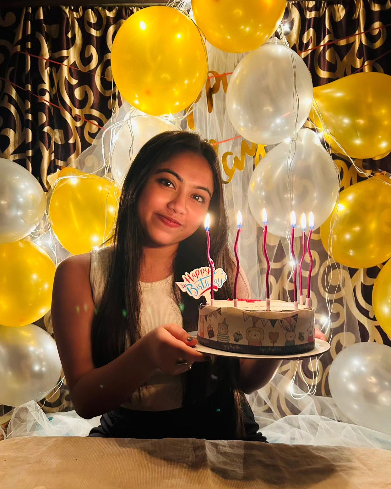

A day made brighter by you
Happy Birthday, Shilu♡
A gallery of little moments
12 frames, one lovely soul.
Some moments deserve to be kept a little closer.
Tap anywhere to begin the music ♡
A little note for your special day
Dear Universe,
Do you know something?
Today is the birthday of someone really special.
Someone who makes this world a little more beautiful, simply by being a part of it.
I hope you make her day as beautiful as her smile, and fill her life with countless reasons to be happy.
After all, today is her day. ❤️

Where It All Began
Before we knew our story.
Dear Universe,
Do you remember those nursery school days?
Those innocent days, when life was simple, friendships were effortless, and we found happiness in the smallest things.
That was where our story first began. We were in the same school, but in different sections. Maybe we talked sometimes, but we never really got the chance to know each other.
And then, life took us in different directions.
I joined a boys' school, and just like that, almost six years passed without any contact.
I never imagined that our paths would cross again.
But life had other plans.
“Some stories begin long before we realise they have begun.”
But Life Had Other Plans
An unexpected reunion.
When I was in Class 10, I went to Rabindra Bharati Basanta Utsav with some of my school seniors.
That was the day I first met Rimpa Di. We spent the whole day having fun, and slowly, we became good friends.
During one of our casual conversations, I suddenly asked if she had a sister. That's when I first heard about Shilu and saw her picture.
At that moment, I didn't think much about it.
Little did I know that she was the same girl I had once known in nursery school.
And perhaps the most unexpected part was yet to come.
In Class 11, she joined my school.
Who knew that someone from my childhood would become a part of my everyday life again?
When Things Started Changing
A feeling I couldn't quite explain.
Class 11 brought a lot of new experiences. Everything felt different, and somewhere in between all those changes, we slowly started talking.
First at school, then on WhatsApp, and eventually over phone calls.
Those little conversations gradually became something I started looking forward to.
Whenever she walked past my classroom, my heartbeat would get a little faster. My friends would tease me whenever she passed by, and I would often find little excuses to visit her classroom during lunch.
I don't know exactly when it started, but somewhere along the way, something inside me began to change.
It felt like a new emotion I had never experienced before.
Little Moments, Big Memories
The little things stay forever.
There were so many little moments that I never thought would become such precious memories.
I still remember racing my bicycle against the auto she took home on rainy days, just to catch one last glimpse of her before going home.
And whenever she came to the library, it felt as if time had slowed down for a little while.
I also remember her first visit to our home on my birthday. I was so shy that I could barely speak.
And who can forget that famous two-luchi incident?
I asked her to take two more luchis, but then said she wouldn't have any more. I replied, "How can you manage with so little food?"
Everyone burst into laughter.
It was such a small moment, but even today, thinking about it brings a smile to my face.
Funny how the smallest moments sometimes become the memories we never want to lose.
Memories That Stayed
Some memories never really leave.
Dear Universe,
Some memories are not just about the moments we spent together. Sometimes, it's the little things we used to do that stay with us.
I miss those conversations on our way back from coaching classes, talking over the phone while I ride my bicycle.
I used to save her voice from our call recordings and keep all her pictures in a separate folder. Maybe I just wanted to hold on to those little moments a little longer.
Do you remember our "Love Story Wala Group"?
Or the day I said my heart had been lost somewhere in her classroom?
I wonder if she understood what I was trying to say back then.
I wonder if she even remembers any of it today.
The Words I Never Said
Some words take years to find.
But not every story moves the way we imagine.
With time, our conversations became less frequent. I always wanted to talk more, but I could feel that things were not quite the same from her side.
My friends noticed how attached I was becoming. They warned me that I might end up hurting myself.
Eventually, they convinced me to delete that folder containing her pictures and voice messages.
And I did.
But Universe, does deleting pictures really mean deleting memories?
I stayed silent because I was afraid. Afraid that if I expressed my feelings, she might get upset, and I could lose even the friendship we had.
So, I kept everything to myself.
Perhaps I was waiting for the right moment, or perhaps I was simply afraid of what might happen next.
A Feeling I Can't Explain
Maybe the heart knows its own language.
I don't know if I can call this love.
All I know is that I miss her even when she's not around. I see her in my dreams, and sometimes I even cry in those dreams, afraid of losing her.
It might sound funny, but that's how deeply she has become a part of me.
Over all these years, without even realising it, she has made a place in my heart that no one else could take.
I don't know if I ever had a special place in her heart, but she certainly had one in mine.
And now, after all these years, I have finally found the courage to speak.
Because somehow, the regret of never expressing my feelings feels much heavier than the fear of hearing a no.
Can I Get a Chance?
One more chance to begin again.
Dear Universe,
There is still something I want to ask.
Would you give us one more chance to start again?
I want to know her better. Because talking over the phone can never be enough to truly know someone.
I want to share all the little moments of my life with her. My feelings, my emotions, my happiness, my sorrows, and even my childish side.
I want a best friend, a companion with whom I can share life's journey, holding her hand along the way.
Life is long, yet it feels short and beautiful when you have the right person beside you.
I want to stand beside her through every sorrow and give her countless reasons to smile. I want us to create new memories, share silly conversations, and enjoy all those little moments that make life special.
I wanted to say all this on my birthday, too, but the situation was different back then.
So, I chose today.
I thought this would be the right day to finally open my heart and let all those unspoken feelings find their words.
And now, Dear Universe, I think it's time.
Time to ask her the question I have carried in my heart for so long.
“Some feelings are worth finding the courage to express.”
A question from my heart
Dear Shilu,
Can we give our story
a new beginning?
Can I get a chance?
I don't expect an answer right now. Take your time, and whatever you feel, I will respect it.
Happy Birthday, Shilu. ❤️
Made with care, and with a heart full of memories.